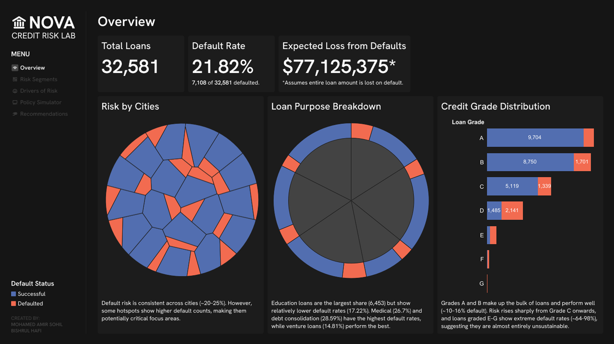

Nova Credit Risk Lab
A credit model that grades its own confidence instead of presenting every finding as equally certain.

The Problem
For the September 2025 DataDNA Credit Risk Analytics Challenge, the goal was to turn a raw loan dataset into a system a lender could actually use to decide who to approve, essentially quantifying risk per borrower and translating that into a defensible approval policy.
The starting numbers set the stakes: 32,581 loans, a 21.82% overall default rate, and — if every defaulted loan amount were treated as a total loss — an expected loss north of $77M. A default rate that high, spread across that many loans, is the kind of dataset where a single blanket approval policy leaves real money on the table in both directions: rejecting good borrowers and approving bad ones.
The Approach
A five-page analytical system built around a validated XGBoost default-probability model (AUC 0.92 on a held-out test set, SHAP values used to explain every prediction). Loan-to-income ratio and applicant income came out as the strongest predictors, ahead of loan grade or loan purpose. A Policy Simulator then turns the model's output into an actual business decision: it tests approval thresholds against a real profit function rather than optimising for accuracy alone.
Built-In Guardrails
Home ownership, gender, marital status, education, and location were kept out on ethical grounds rather than performance grounds, to stop the model learning proxies for protected characteristics.
This was a deliberate, methodological choice grounded in ethical-finance principles and personal beliefs. The Policy Simulator tests approval thresholds against principal recovery alone.
The project closes by rating its own conclusions Robust, Moderate, or Needs Further Work, rather than presenting everything with equal confidence.
The Outcome
The simulator identifies 55% as the profit-maximising approval threshold (a materially better trade-off than looser or stricter cutoffs). The project won the DataDNA Credit Risk Analytics Challenge, September 2025.
The segment-level analysis is where the model's real value shows up, ahead of any single threshold decision. Credit grade turns out to be a sharp cliff rather than a smooth gradient. Grade D loans already default more often than they repay (2,141 defaults against 1,485 successful), and by Grade E through G, default rates run 64–98%, effectively unsustainable regardless of price. Loan purpose tells a more counterintuitive story: education loans carry the largest volume in the dataset (6,453 loans) but one of the lower default rates (17.22%), while medical (26.7%) and debt consolidation (28.59%) loans run riskier.
The age-and-income breakdown adds a further wrinkle worth flagging on its own: the single highest-risk segment isn't the youngest, lowest-income borrowers, as a simple "young and broke" assumption would predict. It's actually borrowers aged 45–54 earning under $25,000, who default at 60.98%. That's a specific, non-obvious segment a coarser age- or income-bracket model would blend into the surrounding averages and lose entirely.
Gallery
A closer look at the system — click to expand, arrow keys move between them, Escape closes.